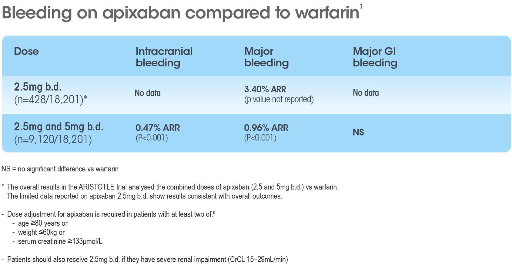

Please note that these data are not from a head-to-head trial
Apixaban 2.5 and 5mg b.d.: bleeding outcomes1
PRADAXA® 110mg
APIXABAN 2.5mg
RIVAROXABAN 15mg
INTRA-CRANIAL
0.47% ARR 58% RRR (p<0.001)
MAJOR
0.96% ARR 31% RRR (p<0.001)
MAJOR GI
0.10% ARR 11% RRR (p=ns)
W
References: 1. Granger CB, et al. N Engl J Med 2011; 365:981–92. 2. Connolly SJ, et al. N Engl J Med 2009; 361:1139–51. 3. Connolly SJ, et al. N Engl J Med 2010; 363:1875–6. 4. Connolly SJ, et al. N Engl J Med 2014; 371:1464–5. 5. Boehringer Ingelheim. Pradaxa® 110mg hard capsules Summary of Product Characteristics. 6. Bristol-Myers Squibb-Pfizer. Eliquis 2.5mg film coated tablets Summary of Product characteristics.

Apixaban 2.5mg b.d.: stroke outcomes1
Apixaban 2.5mg b.d.1
ISCHAEMIC
NO DATA
HAEMORR- HAGIC
NO DATA
STROKE/SYSTEMIC EMBOLISM
1.60% ARR 48% RRR
Pradaxa® 110mg b.d.2-5
ISCHAEMIC
0.14% ARI 13% RRI (p=ns)
HAEMORR- HAGIC
0.26% ARR 69% RRR (p<0.001)
STROKE/SYSTEMIC EMBOLISM
0.18% ARR 11% RRR (p=ns)
W
Please note that these data are not from a head-to-head trial